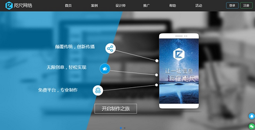

Your browser doesn't support the features required by impress.js, so you are presented with a simplified version of this presentation.
For the best experience please use the latest Chrome, Safari or Firefox browser.
HTML5是什么？
html5是w3c组织推出的html最新标准
- 撰写一套代码适用PC端、移动端、安卓端和IOS端
- more than flash

HTML5是什么？
- 1. 让你不用装Flash，浏览器不再崩溃，笔记本和手机更省电；
- 2. 让你在浏览器里玩愤怒的小鸟;
- 3. 让你上大众点评不用搜索，而是直接点“附近”;
- 4. 让你不打字直接用语音输入文字。
大众所说的H5是---微信上的PPT
1、通过社交网络传播；
2、通过移动端体验；
3、轻功能而重体验的小品级应用。
实际上指的包括一系列技术的“集合”。
- 1、HTML5编写网页结构---由多种骨头组成的骨架
- 2、CSS3负责完成页面的美观度(颜色、布局)---皮肤
- 3、JavaScript负责完成页面的操作需求---动作：张嘴，抬手，转头...
初阶：幻灯片玩法
所需资源：一枚活动策划，一枚设计师，第三方H5制作工具（易企秀、MAKA等等等）

H5的初阶形式就是幻灯片，基本上就是把PPT移到了手机上来。和PPT行业一样的，全靠制作者的设计感
进阶：交互式H5
所需资源：一枚H5策划；一枚视觉设计师；一枚交互设计师；一枚前端工程师；一台服务器

用户体验的挖掘和交互效果的实现，H5从体验上开始让用户有了参与感，用户的分享指数也带来了进一步提升。
测试/答题类，提交表单H5
所需资源：一枚H5策划；一枚视觉设计师；一枚交互设计师；一枚前端工程师；一台服务器
企业对获取用户数据的欲望是与生俱来的，你以为你做测试的时候真的只是做测试么？当你填下你的选择之后，你提交的数据开始输入企业的数据处理中心，分析你的喜好、分析你的需求、分析你的消费水平、分析你的消费态度，确定你是不是目标受众。
动态小游戏
所需资源：一枚H5策划；一枚视觉设计师；一枚交互设计师；一枚游戏开发工程师；一枚后端工程师；一颗游戏引擎；服务器
需要策划、创意、设计、游戏制作以及激励手段的紧密配合。
功能型H5
所需资源： 一枚H5策划；一枚视觉设计师；一枚交互设计师；一枚前端工程师；一枚后端工程师；一台服务器；
功能性的H5能提供一些使用频次较高的功能，免除下载App的麻烦，比如查快递、房间预订等功能。
H5手写代码和H5制作工具的区别
H5页面制作工具
微页

- 易上手度：★★★★★
- 基础功能：★★★★★
- 高级功能：★★★★★
- 模板数量：★★★★
- 模板精美程度：★★★★
- 付费服务性价比：★★★★★
- H5新媒体传播：有
拥有最丰富的功能组件，各种强大的功能可以组成交互丰富的H5场景。微页平台其数量众多，制作精美的海量模板，小白用户也可轻松完成酷炫的H5页面制作。
易企秀
- 易上手度：★★★★★
- 基础功能：★★★★★
- 高级功能：★★★
- 模板数量：★★★★
- 模板精美程度：★★
- 付费服务性价比：★★★★
- H5新媒体传播：无
目前国内市面上使用最频繁的H5微场景制作工具.易企秀拥有众多模板，且用户可以自行上传模板，模板分类标签详细。
另外易企秀也拥有手机端制作功能，不过需要下载app。
MAKA
- 易上手度：★★★★
- 基础功能：★★★★
- 模板数量：★★
- 高级功能：★★★
- 模板精美程度：★★★
- 付费账号性价比：★★★
- H5新媒体传播：无
MAKA口号是简单、强大的HTML5创作工具。编辑界面有新手(有模板)和高阶(无模板)两种编辑模式，提供一些特效模板，都是设置好的效果。
定制化H5与工具制作H5区别
定制化设计画面 ➼程序员，他们通过标记代码的方式把你的这些元素挂在服务器上，这样你的手机才可以预览这些页面并且转发出去，在最后一个环节执行的是程序员，定制化的好处是只要是程序员能力高，并且编辑语言可以实现，你想做成什么样子都可以。
工具化制作就可以不用程序员，而是你直接在易企秀、maka、云来、70度、互动大师、兔展、这样的工具上直接生成，比较直观好操作，但是缺点是工具所能达到的功能都是有限的，也就是他们有什么功能你能用什么功能，很多你想实现的效果他是无法实现的。
举个栗子
你想要去理发
↓
定制化
➷
去理发店，做自己想要的发型
工具化
➷
给你你剪刀，看到使用说明了吧，你自己剪
交互文档中，需要写哪些内容呢？
1、页面流程（界面之间）
页面流程图，可以表达产品的整体结构，帮助同事了解界面之间的关系。在撰写交互文档时，也可以以任务、子任务为模块来详细介绍界面如何跳转、何时跳转。
2、内容布局（界面内）
正在加载状态、加载完成有内容的状态、加载完成无内容的空状态、失败状态（比如网络异常/权限未开启）、不同角色的用户看到的内容是否一样、不同状态的文案图标变化
内容的加载方式，何时加载、何时显示、何时刷新
其他 …
3、交互操作与反馈（界面内）
根据用户与界面之间发生的交互操作，提供相应的反馈，可能是提示内容，也可能是界面内或界面之间的跳转
移动端H5页面的设计稿尺寸大小规范
不把重要内容放在太偏下的位置或者偏上，否则前端布局时可能出现内容显示不全的情况。
解：由上图可知
除去将浏览器全屏显示的情况，几乎所有情况均会有顶部的状态栏和导航栏。
iPhone的设计标准，状态栏和导航栏的独立像素高度分别为40px和88px
由于Android系统，这里可以取默认值为48px和100px
那么就会把网页内容往下挤，进入盲区（根据不同的布局方式可能挤出视口，即可视区域之下，）
得：取这两个系统者的最大值为148（48+100），设计稿要尽量保证单页下面没有重要内容。在绝大部分智能手机分辨率都在640x960px（iPhone4分辨率）之上，所以只要把重要内容放在上图5中的盲区之上即可。计算后的最安全高度为812（960-148=812）。
2.音视频的控制
以后的H5几乎都会有音视频的加入，也算是一个整体流行趋势，视频的运用已经比较普遍
但是兼容性还是存在各种问题，比如（安卓不能同时播放2个多媒体，自动全屏播放，预加载，不同网络状况下的处理等等）
所以考虑到以后的优化手段与开发效率，需要一些动画库来管理与处理，如craftyJs一类的动画框架,这个类库也是方案很好的解决途径之一。
在微信端，部分安卓机型是不支持自动播放的，解决办法就是当用户点击屏幕后台式播放音频
移动端字体单位
移动端字体单位font-size选择px还是rem
// 如需适配多种移动设备，建议使用rem。以下为参考值：
html { font-size: 62.5%; } //10*16 = 62.5%
//设置12px字体 这里注意在rem前要加上对应的px值，解决不支持rem的浏览器的兼容问题，做到优雅降级
body { font-size:12px; font-size:1.2rem; }
电脑模拟测试页面与真机上的差别
图片变形严重
移动端click
移动端click屏幕产生200-300ms的延时响应
说明：移动设备上的web网页是有300ms延迟的，玩玩会造成按钮点击延迟甚至是点击失效。
//解决方案：
zepto的touch模块，tap事件也是为了解决在click的延迟问题
fastclick可以解决在手机上点击事件的300ms延迟
场景再现???
“这个今天下班前能完成吗”
“不行，要3天”“不用那么久吧，这个很简单啊”
“这个牵扯到很多东西啊，挺复杂的”
“其实很简单，只要把这个放到那里，然后把这个复制到那边就行了”
“................................”
产品经理和程序员如何高效工作？
第一：是互相了解
第二：是互相理解
第三：是互相谅解